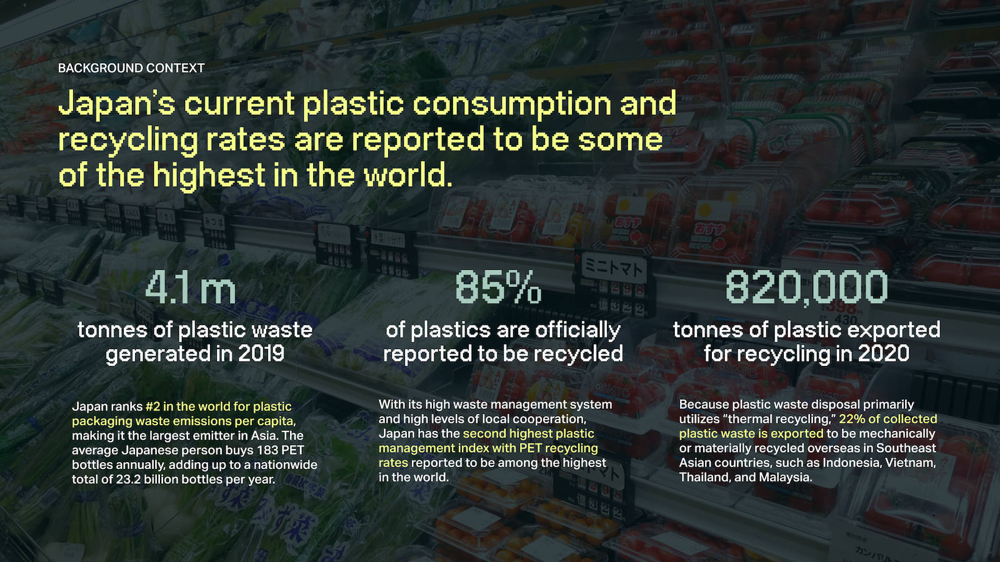
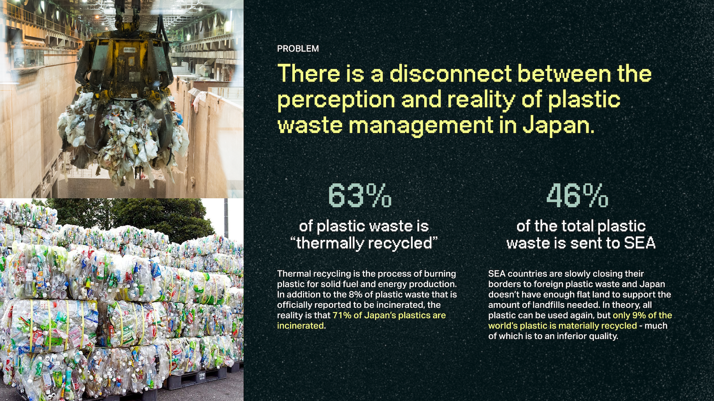
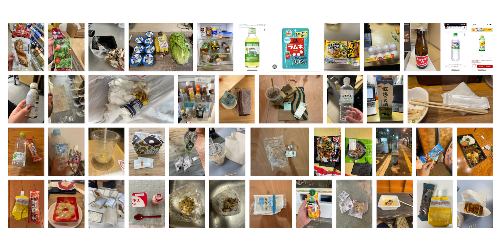

“Mottainai” is a word in Japanese culture that emphasizes the shame for something to go to waste without having made use of its full potential. With the high cost of throwing away waste in Japan, how can encourage individual-level upcycling of household plastic waste?

(Work in Progress - Low Fidelity Prototype)
01. DESK RESEARCH
Japan’s current plastic consumption and recycling rates are reported to be some of the highest in the world. There is a disconnect between the perception and reality of plastic waste management in Japan. 63% of plastic waste is “thermally recycled,” which is the process of burning plastic for solid fuel and energy production to power the incineration plant. 46% of the total plastic waste is sent to Southeast Asian countries that are slowly closing their borders to foreign plastic waste.
(Traditional paintings showing upcycling materials in craftmaking, Source)
 02. PRIMARY RESEARCH
The primary goal was to analyse the cultural contexts that have influenced the perception, social behaviour, and management of waste in Japan, and compare them to global trends in material consumption and resource scarcity within contemporary lived practice and values.
I visited Itabashi Incineration Plant, one of Tokyo’s 23 incineration plants, and found that all waste, no matter how it is sorted by individuals, ends up in incineration or landfills. Despite extremely diligent sorting by individuals and households, their waste is eventually combined again.


Interviews were conducted with participants between the ages of 18 and 42 who were residents of Japan for a majority of their life. They were screened to all be frequent convenience store and/or grocery store consumers and had not visited an incineration plant in the last 10 years. Pictures were collected to analyse what types of waste were most common and how this related to individuals’ daily behavior.
03. DESIGN INTERVENTION
My interviews and analysis led me to 4 key insights focusing on knowledge, price, social norms, and autonomy:
Consumers are not motivated to reduce plastic waste beyond following recycling instructions as they don’t know that “recycled” plastic is actually burned.
Consumers prioritise price - sustainable interventions must match or be less than the pre-existing option to be competitive.
Social norms are a strong motivator – interventions must align with and can use existing social norms to motivate waste-reducing behaviours.
Consumers want increased autonomy in everyday decisions and actions - they want to feel that they can make a difference through their actions.
This led me to develop an inflatable construction kit to upcycle household plastic waste, reinventing existing constructivist toys and exploring new ways of making.
(Example: Orca)


(Tests with different types of plastic waste)
In this project, I conducted a cultural research study, interviewed 8 participants, and generated key insights to inform a design intervention. Japan has a long history of upcycling waste materials through craftmaking, as shown through many craftsmen and tradesmen in the Edo Period. This cultural study examines how we can introduce this notion into modern times and how convenience plays a role in the consumption of raw materials.
→ View the full research report here
→ Summer 2023 (3 months)
→ Cultural Insights
→ Instructors: Sebastian Deterding, Paula Zuccotti